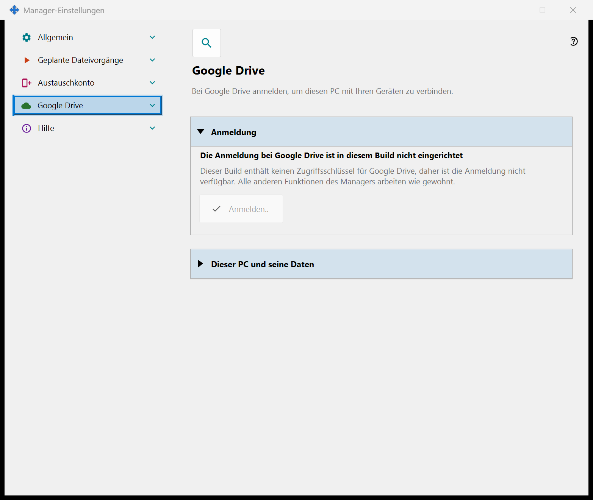
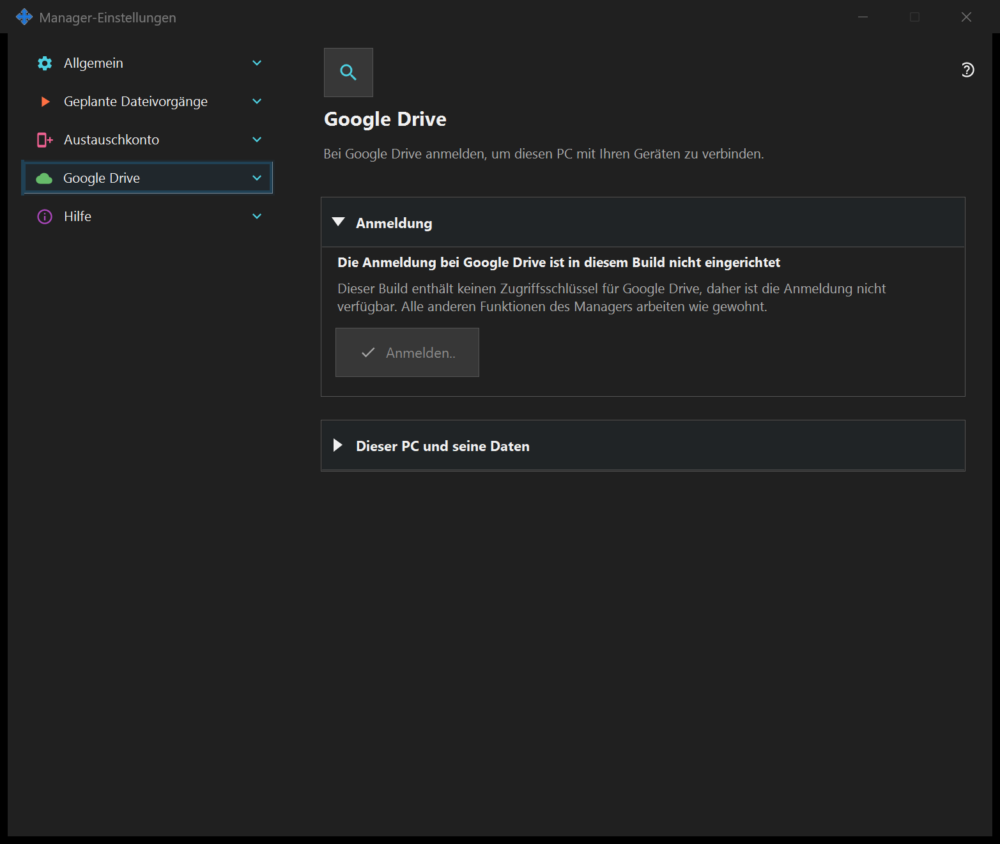

Managereinstellungen
Managereinstellungen
Verwendungszweck
Start, Design, Sprache, entferntes Austauschkonto, Veröffentlichung, Zwischenablage und geplante Dateiaktionen gehören zum Manager. Ein lokaler Server ist dafür nicht erforderlich. Ist die SFTP-Freigabe installiert, bilden ihre Seiten eine Gruppe in diesem Fenster.


In dieser Reihenfolge
Öffnen Sie die Einstellungen über das Tray oder die Komponentenlinks. Öffnen und Schließen starten oder stoppen keinen Server. Ein fehlender lokaler Server sperrt die entfernte Anmeldung nicht.
Die Elemente
Managereinstellungen
Start, Design, Sprache, entferntes Austauschkonto, Veröffentlichung, Zwischenablage und geplante Dateiaktionen gehören zum Manager. Ein lokaler Server ist dafür nicht erforderlich. Ist die SFTP-Freigabe installiert, bilden ihre Seiten eine Gruppe in diesem Fenster. Öffnen Sie die Einstellungen über das Tray oder die Komponentenlinks. Öffnen und Schließen starten oder stoppen keinen Server. Ein fehlender lokaler Server sperrt die entfernte Anmeldung nicht.
Managereinstellungen
Start, Design, Sprache, entferntes Austauschkonto, Veröffentlichung, Zwischenablage und geplante Dateiaktionen gehören zum Manager. Ein lokaler Server ist dafür nicht erforderlich. Ist die SFTP-Freigabe installiert, bilden ihre Seiten eine Gruppe in diesem Fenster. Öffnen Sie die Einstellungen über das Tray oder die Komponentenlinks. Öffnen und Schließen starten oder stoppen keinen Server. Ein fehlender lokaler Server sperrt die entfernte Anmeldung nicht.
Google Drive
Meldet diesen PC bei Ihrem eigenen Google-Konto an, damit die Anwendung ihren privaten versteckten Ordner in Ihrem Google Drive nutzen kann. Klicken Sie auf «Anmelden..»: Der Standardbrowser öffnet sich, Sie bestätigen den Zugriff bei Google, und Google sendet die Antwort über eine lokale Adresse an diesen PC zurück; danach können Sie den Browser-Tab schließen. Angefordert wird nur eine einzige Berechtigung: der Zugriff auf den eigenen versteckten Ordner der Anwendung in Ihrem Google Drive (Bereich drive.appdata). Die Anwendung kann keine anderen Dateien in Ihrem Google Drive sehen und erhält weder eine E-Mail-Adresse noch Profildaten. Erteilt Google einen anderen Zugriff als angefordert, wird die Anmeldung abgelehnt. Die fette Zeile zeigt den Zustand. «Nicht bei Google Drive angemeldet»: «Anmelden..» steht zur Verfügung; ist der Zugriff widerrufen oder abgelaufen, sagt das die Zeile darunter und fordert zur erneuten Anmeldung auf. «Warte auf die Anmeldung im Browser..»: Schließen Sie die Anmeldung im Browser ab oder klicken Sie auf «Abbrechen». «Bei Google Drive angemeldet»: Dieser PC ist mit Ihrem Google Drive verbunden; sein Name und seine Kurzkennung werden angezeigt. «Google Drive ist derzeit nicht verfügbar»: Die Zeile darunter nennt den Grund - keine Verbindung, das tägliche Upload-Limit erreicht, kein freier Speicherplatz auf Ihrem Google Drive oder ein Fehler von Google; bei fehlender Verbindung und bei einem Fehler versucht die Anwendung es selbst erneut. «Abmeldung von Google Drive..» erscheint, solange die Abmeldung läuft. «Auf diesem Gerät abmelden» stellt eine einzige Frage, die Standardantwort ist «Nein». Nach «Ja» wird der Zugriff bei Google widerrufen, werden die Einträge dieses PCs aus dem versteckten Ordner in Ihrem Google Drive gelöscht und wird das auf diesem PC gespeicherte Anmeldetoken gelöscht; eine Zeile unter den Schaltflächen nennt die Zahl der gelöschten Einträge oder meldet, dass Google den Widerruf nicht bestätigt hat - ihn können Sie dann in den Einstellungen Ihres Google-Kontos vornehmen. In einem Build ohne Google-Zugriffsschlüssel zeigt die Seite «Die Anmeldung bei Google Drive ist in diesem Build nicht eingerichtet», «Anmelden..» ist deaktiviert, und die übrigen Funktionen des Managers arbeiten wie gewohnt.


Managereinstellungen
Start, Design, Sprache, entferntes Austauschkonto, Veröffentlichung, Zwischenablage und geplante Dateiaktionen gehören zum Manager. Ein lokaler Server ist dafür nicht erforderlich. Ist die SFTP-Freigabe installiert, bilden ihre Seiten eine Gruppe in diesem Fenster. Öffnen Sie die Einstellungen über das Tray oder die Komponentenlinks. Öffnen und Schließen starten oder stoppen keinen Server. Ein fehlender lokaler Server sperrt die entfernte Anmeldung nicht.
Managereinstellungen
Start, Design, Sprache, entferntes Austauschkonto, Veröffentlichung, Zwischenablage und geplante Dateiaktionen gehören zum Manager. Ein lokaler Server ist dafür nicht erforderlich. Ist die SFTP-Freigabe installiert, bilden ihre Seiten eine Gruppe in diesem Fenster. Öffnen Sie die Einstellungen über das Tray oder die Komponentenlinks. Öffnen und Schließen starten oder stoppen keinen Server. Ein fehlender lokaler Server sperrt die entfernte Anmeldung nicht.
Einstellungen des Austauschservers
Managereinstellungen · SFTP-Freigabeeinstellungen · Einstellungen des Austauschservers